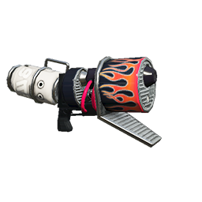

Las categorías de las armas principales son:
- Rociadores (rociadores, lanzamotas y lanzatintas)
- Rodillos
- Pinceles
- Cargatintas
- Derramatic
- Garabateador

Las categorías de las armas principales son:
Los lanzatintas son armas que disparan pequeñas gotas de tinta en rápida sucesión. La mayoría de los tiradores disparan continuamente cuando el jugador aprieta el gatillo, pero algunos tienen un funcionamiento semiautomático.
Los lanzamotas son armas que pueden disparar grandes gotas de tinta con una explosión retardada. La explosión permite a los usuarios atacar a los oponentes situados detrás de los obstáculos o alrededor de las esquinas.
Algunos lanzatintas ofrecen una funcionalidad semiautomática, que requiere que el jugador pulse el gatillo repetidamente en lugar de mantenerlo pulsado.

Los rodillos pueden ser empujados por el suelo, dejando un rastro de tinta. Los usuarios pueden atacar lanzando tinta y también se inflige daño si los enemigos entran en contacto con el arma mientras se empuja, a veces aplastando al oponente de un solo golpe.

Los pinceles pueden ser empujados con especial rapidez, pero dejan un estrecho rastro de tinta. No infligen tanto daño por contacto, por lo que aplastar a los enemigos es prácticamente imposible. Sin embargo, en lugar de arrojar grandes oleadas de tinta, los pinceles se deslizan rápidamente de un lado a otro, lanzando muchos chorros más pequeños. Este rápido movimiento es su principal medio para esparcir la tinta y atacar a los enemigos, lo que los hace ideales para la acción rápida de combate cuerpo a cuerpo.

La gran mayoría de cargatintas pueden eliminar instantáneamente a los oponentes a larga distancia una vez cargados. Los disparos no cargados no tienen suficiente alcance o daño para ser utilizados eficazmente para atacar, pero pueden utilizarse para cubrir el terreno. Es necesario apuntar con precisión y un láser muestra a todo el mundo (incluidos los enemigos) dónde va a caer el disparo. Algunos cargatintas permiten al jugador almacenar su carga cuando nadan en tinta.

Los derramatic son armas de un solo disparo, en forma de cubo, que lanzan tinta en un arco. La tinta puede ser lanzada por encima de los obstáculos para golpear a los oponentes. Algunos derramatic permiten al jugador lanzar tinta de diferentes maneras, como lanzarla en tres direcciones diferentes simultáneamente o disparar proyectiles de largo alcance que explotan al impactar con superficies sólidas.
Los garabateadores son armas de tipo cañón giratorio o Minigun que suelen tener una alta cadencia de fuego y un alcance considerable. En el juego funcionan de forma similar a los cargatintas, pero liberan un chorro de pequeñas balas de tinta en lugar de una única y potente. Al igual que los cargatintas, es necesaria una carga completa para alcanzar el máximo alcance potencial y la máxima duración de los disparos.